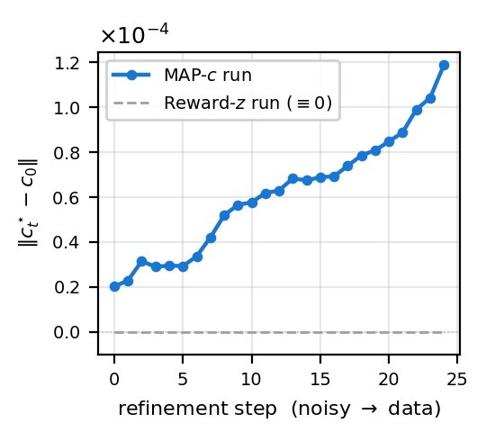
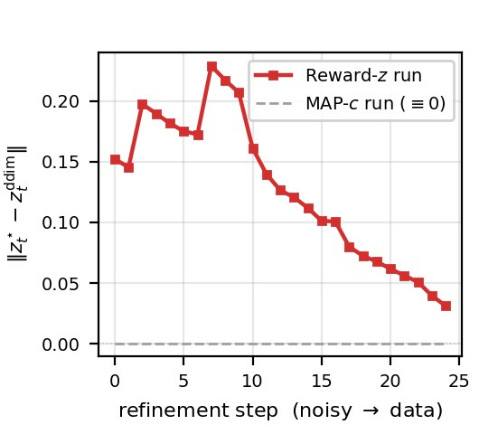
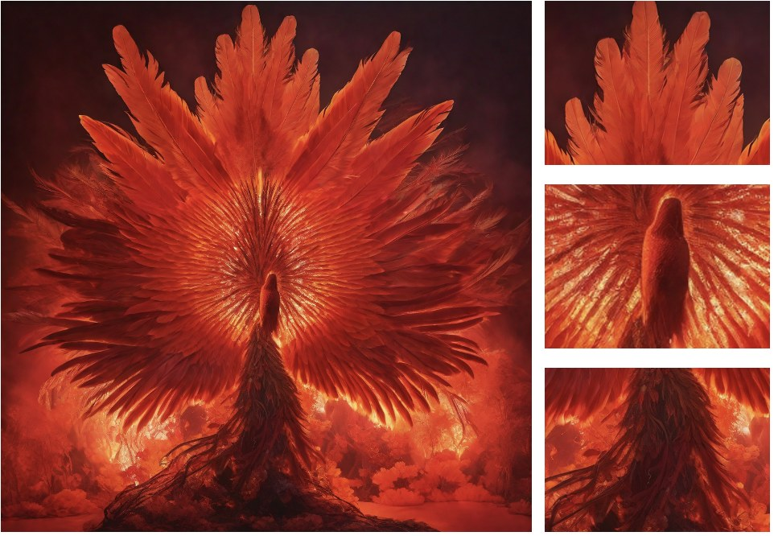
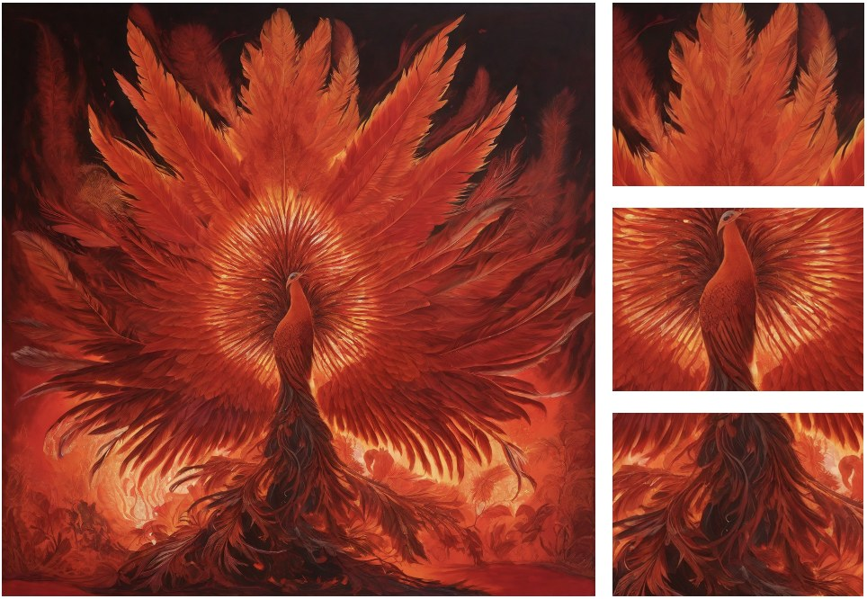
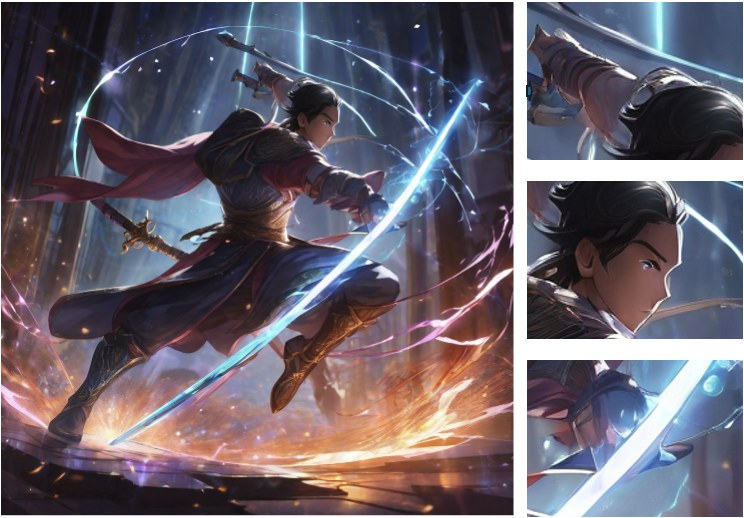
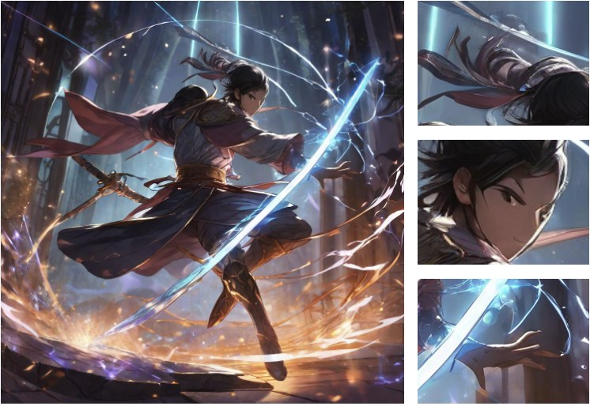
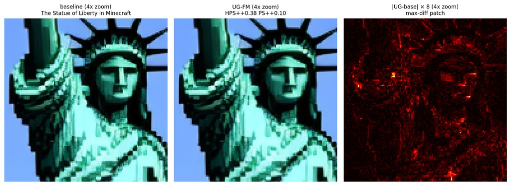

MAP-c refinement rebinds prompt-subject identity
“a cinematic photo of a red panda astronaut, white space suit, dramatic lighting”
Preprint
Reference implementation and reproduction assets for the PG-MAP preprint.
Inference-time alignment of pretrained text-to-image models is typically performed along a single control axis — classifier-free guidance, attention editing, or reward-based latent perturbations — which prevents modeling joint dependencies between conditioning and latent variables, and hinders transfer across generative transports. We propose PG-MAP, a training-free framework that recasts inference-time alignment as a trajectory-level Gibbs-MAP / proximal energy optimization over the conditioning c and the latent state zt via a forward-consistency coupling, optionally guided by a frozen preference reward. This joint formulation enables coordinated updates across modalities while remaining compatible with both diffusion and flow-matching models through transport-specific adaptations. Across diffusion backbones (SD 1.5, SDXL), PG-MAP consistently improves alignment metrics such as PickScore and Aesthetic and, when combined with tuned classifier-free guidance, achieves the strongest overall performance. On flow-matching models (SD3.5-medium), the framework reduces to a latent-only variant, reaching 91.9% PickScore and 75.7% HPS win rates against a static baseline, with controlled experiments ruling out noise-related artifacts.
Per denoising step t, PG-MAP solves a proximal MAP problem on (c, zt):
Special cases. The same objective recovers MAP-c (conditioning-only, σz→0, λ=0), Reward-z (latent-only, σc→0), MAP-cz (reward-free joint, λ=0), and a Universal-Guidance-style limit. CFG modifies the denoiser vector field rather than the query point and is therefore composable with PG-MAP — the Tuned-CFG + PG-MAP row stacks the two control surfaces.
Transport-dependent active set. On diffusion, both c and zt are refined at high-noise steps. On flow matching, a local Euler amplification analysis collapses the active set to {zt} only at data-side steps — the resulting variant we call UG-FM, which delivers the 91.9% PickScore headline.


PartiPrompts (n=1632), seed 123, win-rate vs same-seed static baseline.
| Backbone | Method | PickScore | HPS | Aesthetic | CLIP |
|---|---|---|---|---|---|
| SD 1.5 | PG-MAP (default) | 56.8% | 52.8% | 54.0% | 50.6% |
| Tuned-CFG + PG-MAP | 53.6% | 66.0% | 60.2% | 56.0% | |
| SDXL | PG-MAP (default) | 56.4% | 47.1% | 56.2% | 48.1% |
| Tuned-CFG + PG-MAP | 51.3% | 64.6% | 56.5% | 52.8% | |
| SD3.5-medium | UG-FM (Ours) | 91.9% | 75.7% | 51.7% | 54.2% |
The SDXL row of the table also wins three out of four pairwise human-preference comparisons against strong baselines (vs SDXL static: 60.2%, vs Tuned-CFG: 56.0%, vs NFE-matched UG: 66.8%; 100 raters, 6,200 judgments). Full statistical tests and per-metric Wilcoxon p-values are in the paper.
Same prompt, same seed, same backbone. Left: static baseline. Right: PG-MAP (or one of its specializations). Click any pair to enlarge.
“a cinematic photo of a red panda astronaut, white space suit, dramatic lighting”
“a tea cup with a tiny galaxy swirling inside”
“a phoenix rising from ashes, vivid orange and red feathers, dramatic lighting”


“a swordsman mid-leap slashing through a glowing magical barrier”


“an old sailboat sailing through a thunderstorm with massive lightning bolts overhead”
“a sea turtle wearing a backpack made of corals, floating through a forest”
SD3.5-medium — UG-FM perturbation vs static baseline, full-image vs zoomed crop.

The full reference implementation (PG-MAP and all variants for SD 1.5, SDXL, and SD3.5-medium), per-row YAML configs for every paper-table cell, one-command reproduction scripts, and ≤ 10-minute smoke tests are released under the MIT license at https://github.com/sophialanlan/PG-MAP.
bash scripts/reproduce_table1_sdxl.shtests/smoke/)123); PartiPrompts shuffling is deterministic{kind=link}
{kind=link}
{kind=link}
{kind=link}
{kind=link}
{kind=link}
{kind=link}
{kind=link}
{kind=link}
{kind=link}
{kind=link}
{kind=link}
{kind=link}